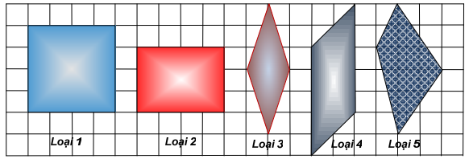

Khảo sát vùng Amazon người ta tìm thấy dấu vết các ngôi mộ, mỗi ngôi mộ có dạng một hình tứ giác lồi với tọa độ các đỉnh được ghi nhận lại là (x1, y1), (x2, y2), (x3, y3) và (x4, y4). Qua khảo sát, người ta nhận thấy mỗi ngôi mộ có những tính chất lịch sử khác nhau, tuy nhiên về hình dạng chúng chỉ thuộc vào một trong 5 loại:
• Loại 1: Hình vuông;
• Loại 2: Hình chữ nhật nhưng không là hình vuông;
• Loại 3: Hình thoi nhưng không là hình vuông;
• Loại 4: Hình bình hành nhưng không là hình vuông, không là hình chữ nhật và không là hình thoi;
• Loại 5: Tứ giác không thuộc một trong 4 loại trên.

Chẳng hạn, nếu ngôi mộ tìm thấy có tọa độ của 4 đỉnh là: (0, 0), (2, 0), (1, 3) và (1, -3) thì nó thuộc loại 3.
Yêu cầu: Cho tọa độ 4 đỉnh của ngôi mộ, hãy xác định xem nó thuộc loại nào.
Dữ liệu nhập:
- Là 8 số nguyên: x1, y1, x2, y2, x3, y3, x4, y4, mỗi số đều nằm trong phạm vi từ -10.000 tới 10.000. Dữ liệu cho đảm bảo 4 điểm trên hình thành 1 tứ giác lồi.
Dữ liệu xuất:
- Số nguyên k là loại của ngôi mộ.